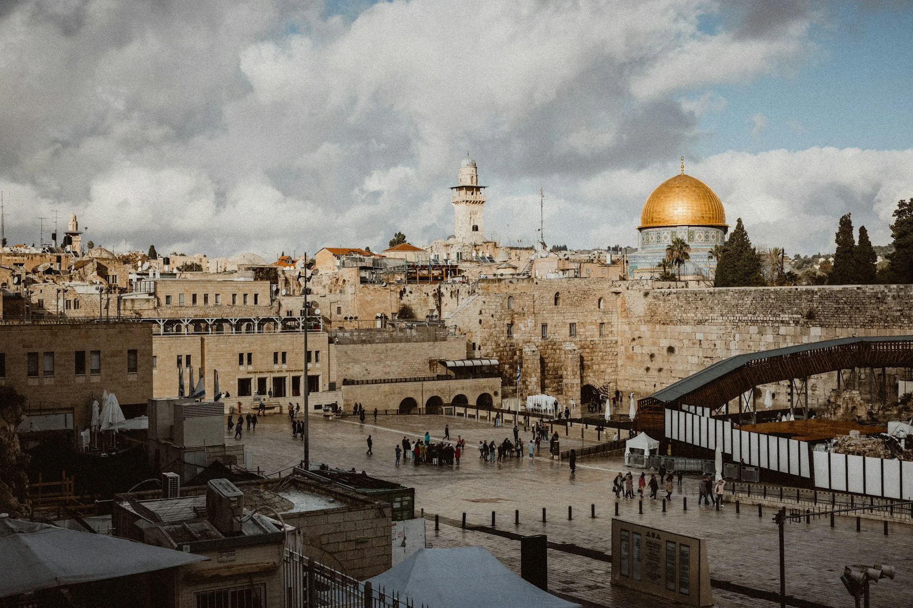

Gerusalemme.
Le strade del Vangelo, un passo alla volta.
Pietre, ulivi e strade che attraversano i secoli. Gerusalemme è un invito ad avvicinarsi ai luoghi del Vangelo con rispetto, ascoltando la storia e le comunità che li abitano.
Un possibile itinerario.
Una traccia da esplorare, con il tempo per vivere i luoghi. Le tappe sono esemplificative e non costituiscono un programma prenotabile.
Entrare nel racconto
Un primo orientamento nella città e nel suo paesaggio. Introduzione alla pluralità di tradizioni che rende questi luoghi così significativi.
Il Monte degli Ulivi
Una giornata dedicata al Monte degli Ulivi e al Getsemani. Letture del Vangelo e tempi di silenzio accompagnano il percorso.
Tra le vie della Città Vecchia
Passeggiata nella Città Vecchia con attenzione ai luoghi cristiani e alla vita quotidiana. Il cammino segue i tempi consentiti dagli accessi.
La Via Dolorosa
Un percorso meditativo lungo la Via Dolorosa e una visita al Santo Sepolcro. Spazio alla preghiera personale e alla comprensione del luogo.
Betlemme, un orizzonte di pace
Un possibile approfondimento dei luoghi della Natività, subordinato alle condizioni e alle disposizioni locali. In alternativa, una giornata di lettura e incontro a Gerusalemme.
Ascoltare, prima di ripartire
Una giornata con tempi più ampi per tornare nei luoghi che hanno lasciato un segno e raccogliere le riflessioni del viaggio.
Una memoria da custodire
Condivisione conclusiva e rientro. Un invito a portare nella vita di ogni giorno le domande nate durante il cammino.
Prima del primo passo.
Questo è un itinerario culturale e spirituale esemplificativo, senza partenze disponibili. L’effettiva realizzabilità dipende dalla situazione e dalle disposizioni delle autorità. Prima di programmare un viaggio, consultare Viaggiare Sicuri e le fonti ufficiali.